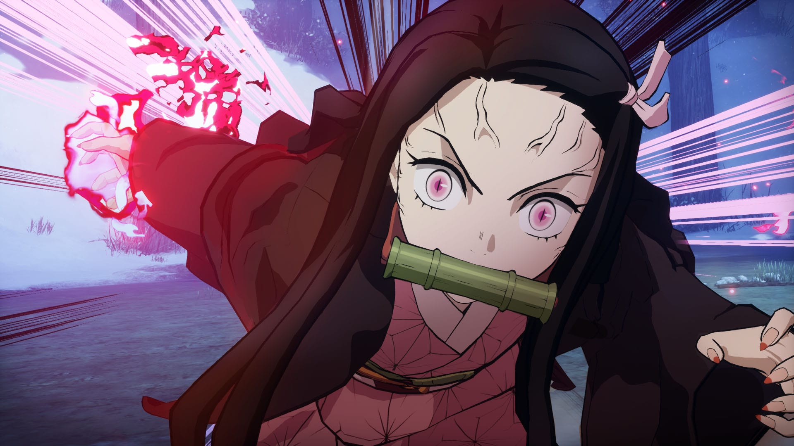

KIMETSU NO YAIBA-HINOKAMI KEPPUUTAN
El título contará con combates de acción real en 3D, modo historia basado en el anime y versión para PS5 y Xbox Series. Saldrá en Japón en 2021.
Aniplex y CyberConnect2 han anunciado oficialmente Demon Slayer: Kimetsu no Yaiba – Hinokami Keppuutan, nombre definitivo del previamente anticipado título para PS4, PS5, Xbox y PC. La firma nipona ha informado con detalle y con nuevas imágenes acerca de lo que podemos esperar de este título de acción y aventura de los creadores de la célebre saga de juegos de Naruto Ultimate Ninja y Dragon Ball Z: Kakarot.
IMAGENES VIDEOJUEGO


- 